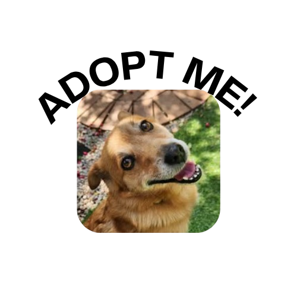

Paw R Us SA
Introduction to Paw R Us SA

Paw R Us SA is a pet welfare organisation that was founded in 2018 by a group of pet owners. Our organisation is an animal-focused organisation that mainly operates its activities online through a Facebook account.
The presence of Paw R Us SAs can be felt online through many social media platforms.
Our engagement online is used for two most important things including the following:
- Firstly, to engage with our pet lovers
- Secondly, to seek out for donors and sponsors who can help support fight against the financial constraints of the animals that prevent them from receiving care and a good upbringing.
What you can expect to find on the website:
- Consistent updates about our activities
- Open days to visit the animals
- Updates about animals up for adoption
- Animal awareness fundraising
Over the years, the organisation has been able to continue its services for homeless animals through the various help from donations and volunteers around the community.
And we hope to continue to do so for the next coming years through the help of the public and donors willing to continue this journey with us and our animals.
Follow us more on the following social media platforms to remain in contact with us even more.